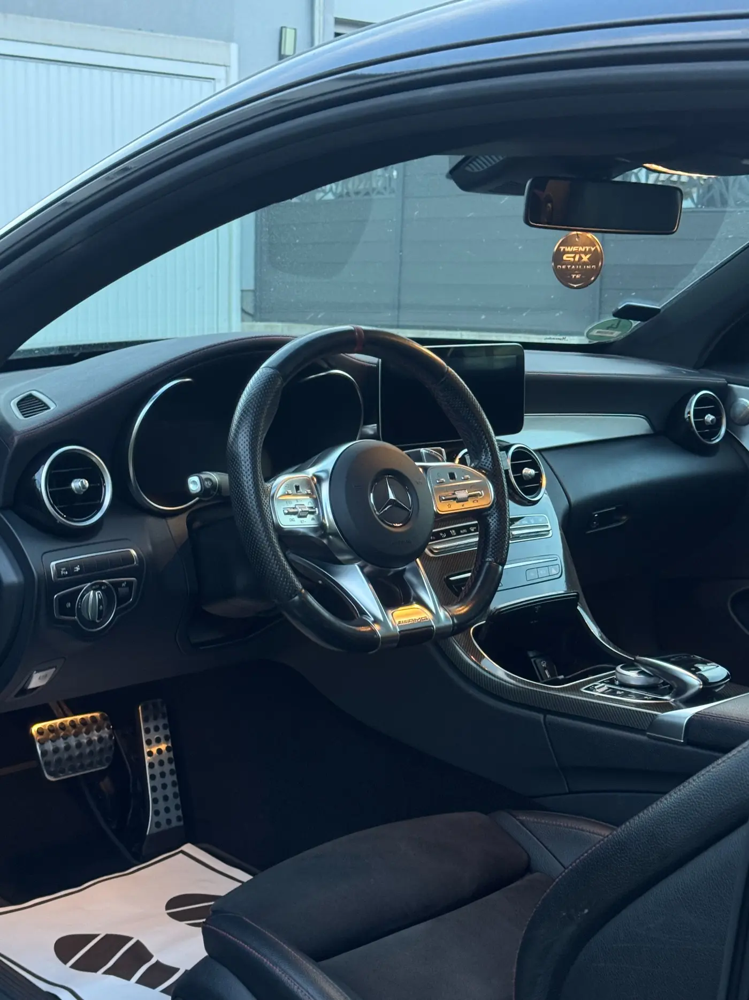

Essential
Für regelmäßig gepflegte Innenräume und eine gründliche Auffrischung.
- Aussaugen von Innenraum und Kofferraum
- Cockpit und Oberflächen
- Türverkleidungen und Scheiben innen
Preis nach SichtungAnfragen
Professionelle Innenraumaufbereitung für Pkw, Transporter und Lkw – persönlich eingeschätzt, materialgerecht ausgeführt und vor dem Termin transparent abgestimmt.
Keine Stockfotos, keine leeren Versprechen: Dieser Vergleich zeigt einen tatsächlich aufbereiteten Fahrerfußraum.
Weitere Vorher-Nachher-Ergebnisse
 VorherNachher
VorherNachherDer genaue Umfang wird anhand von Fahrzeuggröße, Material und Verschmutzung abgestimmt. So zahlst du nicht für Leistungen, die dein Fahrzeug nicht braucht.
Für regelmäßig gepflegte Innenräume und eine gründliche Auffrischung.
Für deutlich beanspruchte Innenräume mit textilen Flächen.
Für stark beanspruchte Innenräume und besonders sorgfältige Detailarbeit.
Zusätzlich möglich: Polster- und Lederreinigung, Teppich- und Kofferraumreinigung, Tierhaarentfernung sowie Innenraumreinigung für Transporter und Lkw.

Jedes Fahrzeug wird nach Zustand, Material und Nutzung individuell behandelt. Statt starrer Standardabläufe zählt das sichtbare Ergebnis.
Vom privaten Pkw bis zum gewerblich genutzten Fahrerhaus: Umfang und Preis werden vor dem Termin passend zum Fahrzeug abgestimmt.

Jeder Innenraum wird nach seinem tatsächlichen Zustand behandelt. Umfang und Preis werden vor dem Termin verständlich besprochen.
Du erhältst zuerst eine Einschätzung. Erst danach werden Umfang, Preis und Termin verbindlich abgestimmt.
Per WhatsApp, Telefon oder Formular.
Modell, Verschmutzung und gewünschte Leistung nennen.
Relevante Innenraumbereiche möglichst gut sichtbar zeigen.
Aufwand und Preis werden individuell eingeschätzt.
Details zur Übergabe werden persönlich abgestimmt.
Nach Aufbereitung und Abschlusskontrolle.
Solange noch keine verifizierten Bewertungsdaten eingebunden sind, zeigt die Website bewusst keine Sterne, Kundennamen oder Fantasiezahlen. Entscheide anhand der dokumentierten Arbeiten und der persönlichen Beratung.
Die wichtigsten Antworten zum Ablauf. Details zu deinem Fahrzeug werden persönlich geklärt.
Von Fahrzeuggröße, Material, Verschmutzungsgrad und gewünschtem Leistungsumfang. Deshalb wird der Preis nach Fahrzeugdaten und möglichst aussagekräftigen Fotos abgestimmt.
Die Dauer hängt vom Paket und vom Zustand des Fahrzeugs ab. Eine realistische Einschätzung erhältst du zusammen mit dem Angebot.
Ja, Tierhaarentfernung und die gezielte Behandlung besonderer Verschmutzungen gehören zu den angebotenen Zusatzleistungen. Der Mehraufwand wird vorab besprochen.
Ja. Die Aufbereitung erfolgt nach persönlicher Abstimmung und Terminvereinbarung.
Sende Fahrzeugmodell, gewünschte Leistung und drei bis fünf Fotos. Du erhältst anschließend eine persönliche Einschätzung.